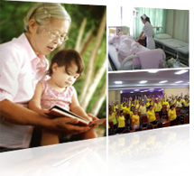
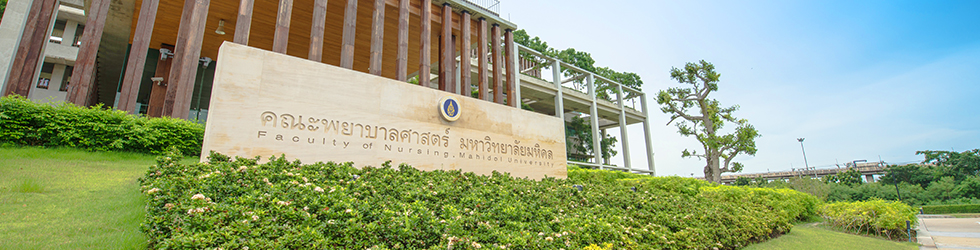

ประวัติความเป็นมา
 |
ภาควิชาการพยาบาลรากฐานเป็นภาควิชาหนึ่งในคณะพยาบาลศาสตร์ มหาวิทยาลัยมหิดล มีหน้าที่รับผิดชอบสอนวิชาในระดับปรีคลินิก (Pre-Clinic) เป็นส่วนใหญ่ ในสมัยที่คุณหญิงพิณพากย์พิทยาเภท ดำรงตำแหน่งหัวหน้าพยาบาลและผู้อำนวยการโรงเรียนพยาบาลฯ ในระหว่าง พ.ศ.2478–2505 นั้น ภาควิชาการพยาบาลรากฐานใช้ชื่อว่าแผนกครูฝึกหัดพยาบาล มีหน้าที่รับผิดชอบสอนและรับภาระดูแลทุกข์สุขของนักเรียนพยาบาลที่เข้าเรียนใหม่ทั้งหมด วิชาต่างๆ ที่สอนมีวิชาในหมวดวิทยาศาสตร์ และวิชาเสริมวิชาชีพหลายวิชา วิชาการพยาบาลโดยตรงมีวิชาศิลปการพยาบาล ซึ่งวิธีสอนในสมัยนั้นจะเป็นการบรรยายให้นักเรียนเข้าใจทฤษฎีก่อน แล้วครูจึงสาธิตวิธีทำการพยาบาลให้ดู หลังจากนั้นนักเรียนจะได้ฝึกหัดทำกับเพื่อนๆ หรือหุ่นในห้องฝึกปฏิบัติการพยาบาลก่อนทุกครั้งแล้วจึงจะทำการพยาบาลกับผู้ป่วยบนหอผู้ป่วย
ในปี พ.ศ.2499 คุณหญิงพิณพากย์พิทยาเภท ได้เปิดรับนักศึกษาในหลักสูตรวิทยาศาสตรบัณฑิต (พยาบาล) ขึ้นอีกหลักสูตรหนึ่ง เพิ่มจากหลักสูตรอนุปริญญาพยาบาลผดุงครรภ์และอนามัย |
ต่อมาในช่วงระหว่าง พ.ศ.2501 – 2515 จากเดิมที่โรงเรียนพยาบาลผดุงครรภ์และอนามัยเคยรับนักศึกษาหลักสูตรอนุปริญญาปีละไม่เกิน 100 คน เพิ่มเป็นปีละ 100 คน ตั้งแต่ปี พ.ศ. 2501 และเป็นปีละ 200 คน ในระยะต่อมา โดยรับเข้าศึกษาต้นปีการศึกษา 100 คน และกลางปีการศึกษาอีก 100 คน แผนกครูฝึกหัดพยาบาลจึงต้องการครูและห้องที่ใช้ฝึกปฏิบัติศิลปการพยาบาลเพิ่มขึ้น ซึ่งเดิมเป็นห้องขนาดเล็ก บรรจุเตียงได้เพียง 8 – 9 เตียง จำเป็นต้องเพิ่มจำนวนเตียงเป็น 12 เตียง มีการจัดห้องฝึกปฏิบัติการพยาบาลเลียนแบบหอผู้ป่วยของโรงพยาบาลให้มากที่สุด เพื่อให้นักเรียนเกิดความคุ้นเคยกับสถานที่ก่อนขึ้นปฏิบัติงานจริง แต่เนื่องจากครูประจำวิชามีไม่กี่คน และนักเรียนต้องกระจายขึ้นฝึกปฏิบัติการพยาบาลหลายหอผู้ป่วย ดังนั้นในช่วงฝึกปฏิบัติ จึงจำเป็นต้องอาศัยครูผู้ตรวจการ หัวหน้าและพยาบาลประกาศนียบัตรประจำหอผู้ป่วยต่างๆช่วยสอน ให้คำแนะนำและดูแลนักเรียนด้วย
ในปี พ.ศ.2502 ได้ปรับปรุงการบริหารงานแผนกครูฝึกหัดพยาบาลใหม่ โดยแยกเป็น 2 แผนก คือ แผนกศิลปการพยาบาล และแผนกวิทยาศาสตร์รากฐาน วิชาต่างๆ ที่ 2 แผนก รับผิดชอบดำเนินการสอนนั้นจะใช้ครูร่วมกัน ต่อมาในปี พ.ศ.2515 โรงเรียนพยาบาลผดุงครรภ์และอนามัย คณะแพทยศาสตร์ศิริราชพยาบาล ได้รับอนุมัติให้ยกวิทยฐานะเป็นคณะพยาบาลศาสตร์ เมื่อวันที่ 23 มิถุนายน พ.ศ.2515 และได้รวมแผนกศิลปการพยาบาลกับแผนกวิทยาศาสตร์รากฐาน เป็นภาควิชาการพยาบาลรากฐาน
ในปี พ.ศ. 2519 – 2524 คณะพยาบาลศาสตร์ร่วมมือกับกระทรวงสาธารณสุขจัดหลักสูตร การอบรม การบริหารการพยาบาลแก่พยาบาลจากโรงพยาบาลต่างๆ ทั้งในส่วนกลางและส่วนภูมิภาค โดยทางกองการพยาบาล กระทรวงสาธารณสุข เป็นผู้คัดเลือกพยาบาลในระดับบริหารและเตรียมที่จะเป็นผู้บริหารมารับการอบรมที่คณะพยาบาลศาสตร์ ใช้เวลาอบรม 8 – 12 สัปดาห์
ต่อมา ในปี พ.ศ. 2525 คณะพยาบาลศาสตร์ได้ปรับปรุงหลักสูตรการอบรม การบริหารการพยาบาล ให้มีความทันสมัยขึ้น เป็นหลักสูตรการพยาบาลเฉพาะทาง สาขาการบริหารการพยาบาล ใช้ระยะเวลาอบรม 12 สัปดาห์ โดยทางคณะเป็นผู้สอบคัดเลือกจากพยาบาลทั่วไปทั้งส่วนกลางและส่วนภูมิภาค รับนักศึกษาประมาณรุ่นละ 20 – 25 คน
ในปี พ.ศ. 2527 ได้เปิดหลักสูตรการพยาบาลเฉพาะทางเพิ่มอีก 1 สาขา คือ สาขาการพยาบาลผู้สูงอายุ จำนวนนักศึกษาที่รับในแต่ละรุ่นประมาณ 20 คน หลักสูตรการพยาบาลเฉพาะทางทั้ง 2 สาขา อยู่ในความรับผิดชอบของคณาจารย์ภาควิชาการพยาบาลรากฐาน เป็นหลักสูตรที่เปิดต่อเนื่องทุกปี และต่อมาปี พ.ศ.2532 ได้เพิ่มระยะเวลาในการอบรมจาก 12 สัปดาห์ เป็น 16 สัปดาห์ และในปี พ.ศ.2542 เปลี่ยนหน่วยกิต จากจำนวน 13 หน่วยกิต เป็น 15 หน่วยกิต ในปี พ.ศ.2546 ได้ปรับปรุงหลักสูตรการพยาบาลเฉพาะทางให้สอดคล้องกับแนวทางของสภาการพยาบาล โดยมีวิชาแกน 2 หน่วยกิต วิชาเฉพาะสาขา 13 หน่วยกิต และเพื่อให้งานด้านการพยาบาลผู้สูงอายุครบวงจร ภาควิชาการพยาบาลรากฐาน ได้เล็งเห็นความจำเป็นและความต้องการในด้านการดูแลและส่งเสริมสุขภาพของประชาชนกลุ่มผู้สูงอายุ จึงได้จัดตั้งโครงการส่งเสริมสุขภาพผู้สูงอายุ คณะพยาบาลศาสตร์ เมื่อวันที่ 23 สิงหาคม 2531 เพื่อให้บริการทางวิชาการแก่สังคมและเป็นแหล่งฝึกปฏิบัติของนักศึกษาหลักสูตรการพยาบาลเฉพาะทาง สาขาการพยาบาลผู้สูงอายุ
ปี พ.ศ. 2530 คณะฯ ได้แบ่งส่วนราชการเป็นการภายใน โดยตั้งสำนักงานเสริมศึกษาและสาธิตทางการพยาบาล (Learning Resource Center = L.R.C.) มีผู้แทนคณาจารย์จากภาควิชาต่างๆ เป็นคณะทำงาน สำนักงานฯ เริ่มให้บริการแก่อาจารย์และนักศึกษาทุกหลักสูตรในการยืมสื่อ อุปกรณ์ และใช้ห้องปฏิบัติการเพื่อการเรียนการสอน จนกระทั่งในปี พ.ศ. 2535 มติคณะรัฐมนตรีได้กำหนดวิชาชีพการพยาบาลเป็นวิชาชีพสาขาขาดแคลนสาขาหนึ่ง และให้สถาบันการศึกษาพยาบาลผลิตพยาบาลเพิ่มมากขึ้นอีกหนึ่งเท่าของที่มีอยู่ (จาก 200 เป็น 400 คน) จำนวนนักศึกษาที่เพิ่มขึ้น ทำให้เกิดปัญหาและอุปสรรคในการจัดประสบการณ์การเรียนการสอน พบว่าโอกาสที่นักศึกษาพยาบาลจะมีประสบการณ์จริงในการฝึกปฏิบัติทักษะทางการพยาบาลบนหอผู้ป่วยน้อยลง คณะพยาบาลศาสตร์จึงพิจารณาหาแนวทางในการแก้ไขปัญหาการจัดการศึกษาภาคปฏิบัติดังกล่าว ให้มีอาจารย์และเจ้าหน้าที่ประจำสำนักงานเสริมศึกษาและสาธิตทางการพยาบาล เพื่อรวบรวมสื่อและอุปกรณ์การพยาบาล ผลิตคู่มือเพื่อประกอบการเรียนการสอน เป็นแหล่งฝึกปฏิบัติทักษะทางการพยาบาล อาทิ การพยาบาลพื้นฐาน การประเมินภาวะสุขภาพ โดยจัดจำลอง สถานการณ์บางอย่างที่จำเป็นให้นักศึกษาได้ทดลองฝึกปฏิบัติ ทั้งนี้เพื่อป้องกันความผิดพลาดที่อาจจะเกิดขึ้นเมื่อนักศึกษาขึ้นไปปฏิบัติการพยาบาลกับผู้ป่วย คณะฯจึงแบ่งส่วนราชการเป็นการภายใน ตามคำสั่งคณะพยาบาลศาสตร์ที่ 80/2536 ลงวันที่ 16 กันยายน 2536 โดยแบ่งส่วนราชการของภาควิชาการพยาบาลรากฐานมาเป็นอาจารย์ประจำสำนักงานเสริมศึกษาและสาธิตทางการพยาบาล จำนวน 10 คน โดยมีอาจารย์เสาวนีย์ สุบรรณรัตน์ เป็นหัวหน้าหน่วย หน่วยวิชาบริหารการพยาบาล จำนวน 6 คน โดยมี รองศาสตราจารย์สุลักษณ์ มีชูทรัพย์ เป็นหัวหน้าหน่วย และหน่วยการพยาบาลรากฐาน 12 คน โดยมี ผู้ช่วยศาสตราจารย์จรัสวรรณ เทียนประภาส เป็นหัวหน้าหน่วย สายการบังคับบัญชาทั้ง 3 หน่วยงาน อยู่ภายใต้การบังคับบัญชาของหัวหน้าภาควิชาการพยาบาลรากฐาน ขณะนั้นคือ ผู้ช่วยศาสตราจารย์จรัสวรรณ เทียนประภาส แต่การบริหารงานภายในหน่วยขึ้นกับหัวหน้าหน่วย ต่อมาในปี พ.ศ.2538 รองศาสตราจารย์สุลักษณ์ มีชูทรัพย์ ดำรงตำแหน่งหัวหน้าภาควิชาการพยาบาลรากฐาน และเป็นหัวหน้าหน่วยบริหารการพยาบาลด้วย ได้มีนโยบายที่จะรวมการบริหารงานทั้ง 3 หน่วยงานเข้าด้วยกัน โดยให้อาจารย์ทั้ง 3 หน่วยงาน เป็นคณะกรรมการภาควิชาฯ ร่วมกัน แต่ยังคงแยกการจัดการเรียนการสอนเฉพาะหน่วยอยู่ ต่อมาในปีพ.ศ.2542 ผู้ช่วยศาสตราจารย์ทองกษัตริย์ ศลโกสุม ดำรงตำแหน่งหัวหน้าภาควิชาการพยาบาลรากฐาน ได้มีนโยบายกระจายภาระงานให้อาจารย์ทุกคนในภาควิชาฯ และร่วมกันสอนในวิชาที่ภาควิชาฯ รับผิดชอบบางวิชาร่วมกัน ในปี พ.ศ.2543 รองศาสตราจารย์ฉวีวรรณ โพธิ์ศรี ดำรงตำแหน่งหัวหน้าภาควิชาการพยาบาลรากฐาน ได้ดำเนินนโยบายให้อาจารย์ทั้ง 3 หน่วยงาน ปฏิบัติงานร่วมกัน กระจายภาระงานการเรียนการสอนและการเป็นกรรมการชุดต่างๆ ของภาควิชาฯ ต่อมาคณะพยาบาลศาสตร์ มีคำสั่งที่ 191/2543 ลงวันที่ 27 พฤศจิกายน 2543 ยกเลิกคำสั่งคณะพยาบาลศาสตร์ ที่ 80/2536 ลงวันที่ 4 สิงหาคม 2536 นั่นคือภาควิชาฯ ไม่แยกเป็น 3 หน่วยงาน อาจารย์ทุกคนกลับมาทำงานร่วมกันในภาควิชาฯ และขอตัวรองศาสตราจารย์ผจงพร สุภาวิตา อาจารย์ในภาควิชาฯ ไปปฏิบัติงานตำแหน่งหัวหน้าสำนักงานเสริมศึกษาและสาธิตทางการพยาบาล ต่อมาในปี พ.ศ. 2546 รองศาสตราจารย์ผจงพร สุภาวิตาได้รับเลือกตั้งให้ดำรงตำแหน่งหัวหน้าภาควิชาการพยาบาลรากฐาน จึงได้รักษาการตำแหน่งหัวหน้าสำนักงานเสริมศึกษาและสาธิตทางการพยาบาลอีก 1 ตำแหน่ง ในปี พ.ศ. 2549 ได้มีการปรับโครงสร้างภายในคณะพยาบาลศาสตร์และจัดตั้ง สำนักพัฒนานวัตกรรมเทคโนโลยีทางการศึกษา สารสนเทศ และการสื่อสาร โดยแต่งตั้งให้อาจารย์วรวรรณ วาณิชย์เจริญชัย อาจารย์ในภาควิชาฯเป็นหัวหน้าสำนักงานฯ
ในปี พ.ศ.2558 ภาควิชาฯ มีบุคลากรทั้งหมด 20 คน ประกอบด้วย ข้าราชการ สาย ก. ปฏิบัติงานในตำแหน่งอาจารย์ 1 คน พนักงานมหาวิทยาลัย สายวิชาการ 18 คน และเจ้าหน้าที่สายสนับสนุนวิชาการ ปฏิบัติงานในตำแหน่งเจ้าหน้าที่บริหารงานทั่วไป 2 คน คณาจารย์ของภาควิชาฯ เมื่อจำแนกตามตำแหน่งทางวิชาการ ประกอบด้วยรองศาสตราจารย์ 5 คน ผู้ช่วยศาสตราจารย์ 5 คน อาจารย์ 3 คน และผู้ช่วยอาจารย์ 5 คน แยกตามวุฒิการศึกษา จบปริญญาโท 11 คน ปริญญาเอก 7 คน

รายนามหัวหน้าภาควิชา
 |
พ.ศ. 2502 – 2516
| ผู้ช่วยศาสตราจารย์ปราณี ผลพันธิน
|
|
พ.ศ. 2516 – 2521 |
รองศาสตราจารย์ลออ หุตางกูร |
|
พ.ศ. 2521 – 2530 |
ผู้ช่วยศาสตราจารย์จำเรียง กูรมะสุวรรณ |
|
พ.ศ. 2530 – 2535 |
ผู้ช่วยศาสตราจารย์ปราณี จาติเกตุ |
|
พ.ศ. 2535 – 2538 |
ผู้ช่วยศาสตราจารย์จรัสวรรณ เทียนประภาส |
|
พ.ศ. 2538 – 2541 |
รองศาสตราจารย์สุลักษณ์ มีชูทรัพย์ |
|
พ.ศ. 2541 – 2543 |
ผู้ช่วยศาสตราจารย์ทองกษัตริย์ ศลโกสุม |
|
พ.ศ. 2543 – 2546 |
รองศาสตราจารย์ฉวีวรรณ โพธิ์ศรี |
|
พ.ศ. 2546 – 2549 |
รองศาสตราจารย์ผจงพร สุภาวิตา |
|
พ.ศ. 2549 – 2557 |
รองศาสตราจารย์จันทนา รณฤทธิวิชัย |
|
พ.ศ. 2557 – 2561 |
ผู้ช่วยศาสตราจารย์ ดร.นารีรัตน์ จิตรมนตรี |
|
พ.ศ. 2561 - ปัจจุบัน |
รองศาสตราจารย์ ดร.วิราพรรณ วิโรจน์รัตน์ |

|